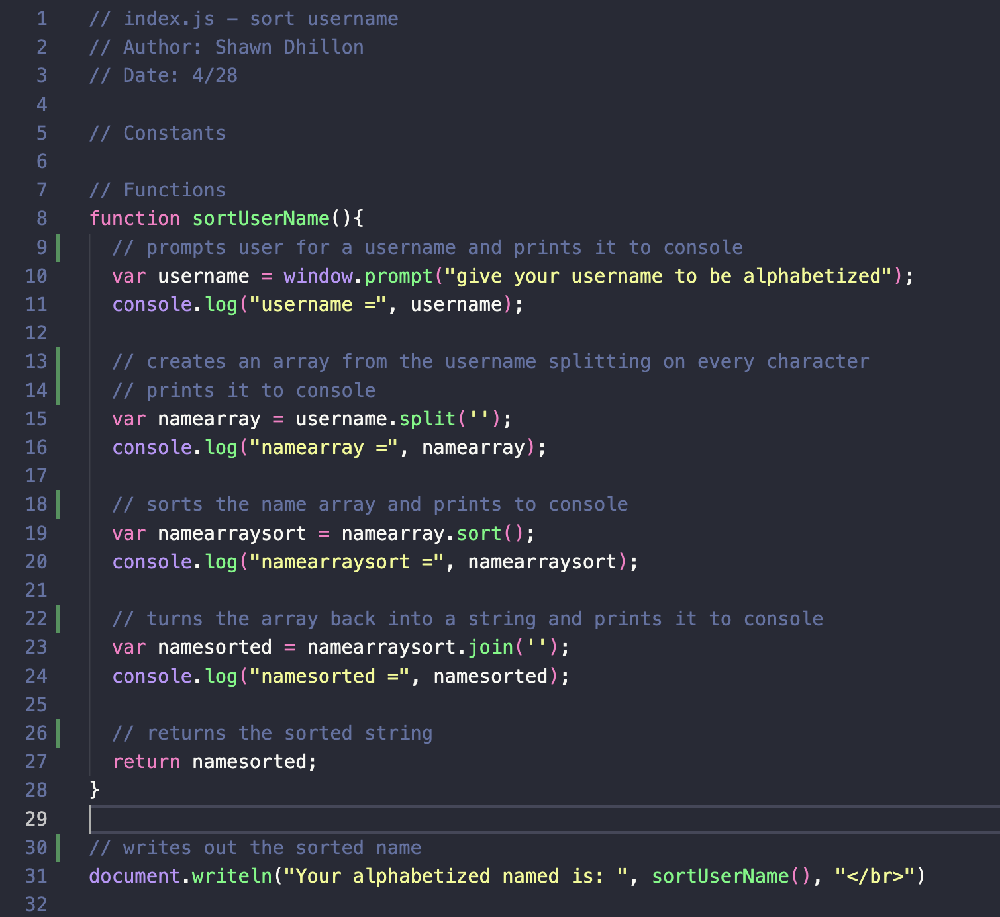
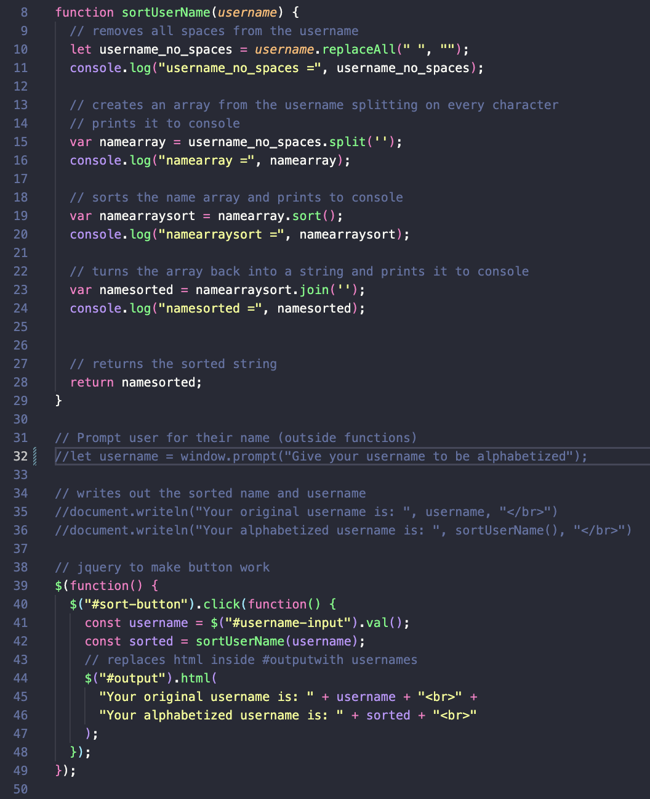
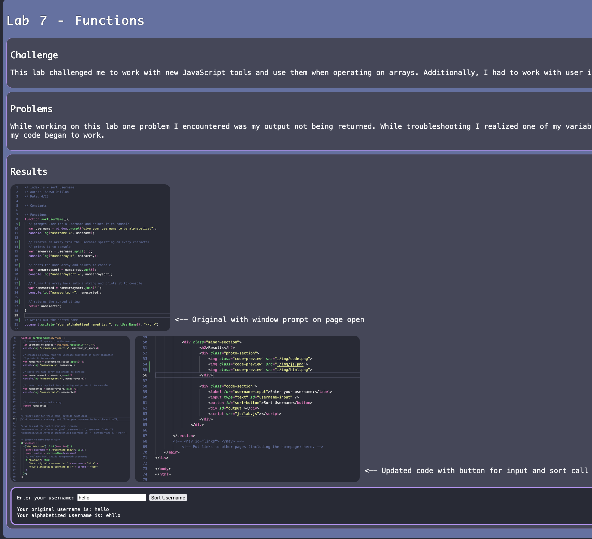
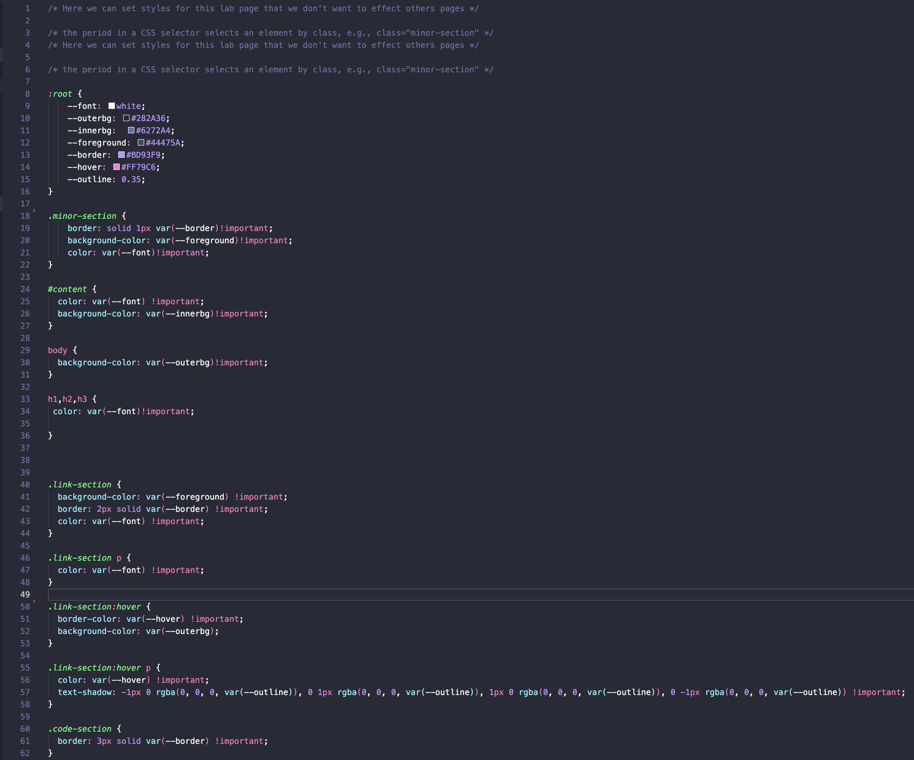
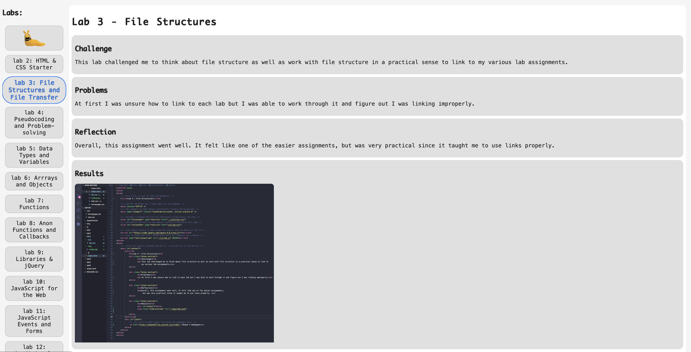
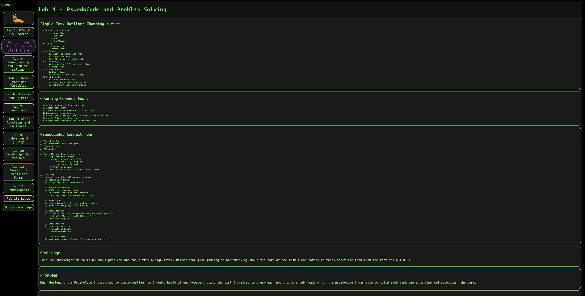
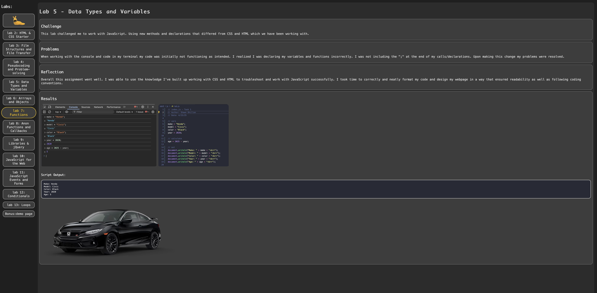
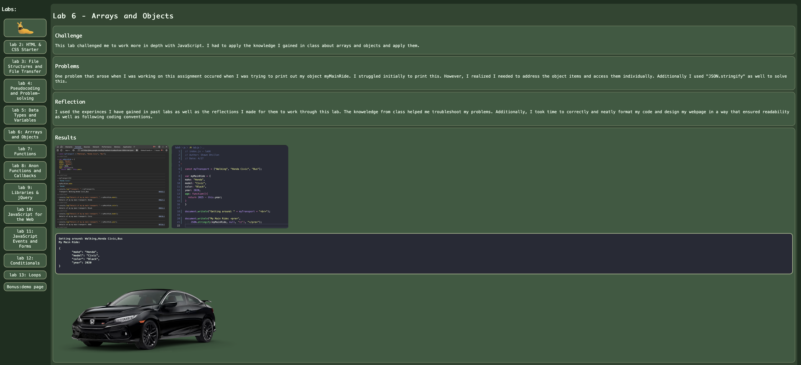
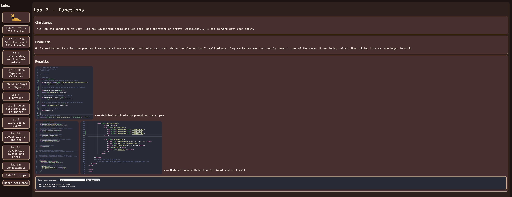

Lab 14 - Debugging Tools & Strategies
Challenge
I was challenged to go back and use my current knowledge to fix problems I encountered in the past. Using newer techniques I had to resolve older issues.
Problems
For the most part since I have learned a lot since my old labs I didn't encounter any issues. Though I did encounter some minor syntactical issues with the var operator in my CSS files.
Results



I was able to go back to my lab7 and remove the ugly window.prompt() and instead use a text box like I have in some of the more recent labs.

Creating and using the above code as a template for all my css files I was able to go back to all my old labs and create new specialized themes for each of them:




